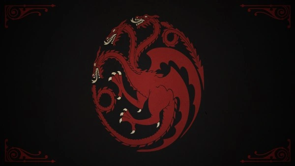
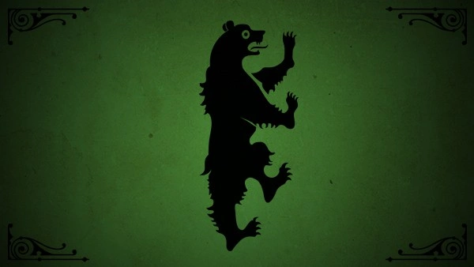
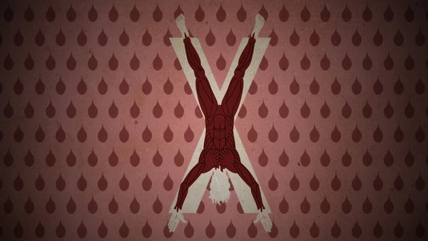
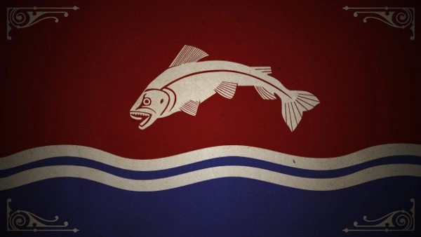
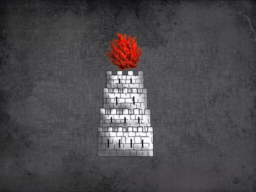
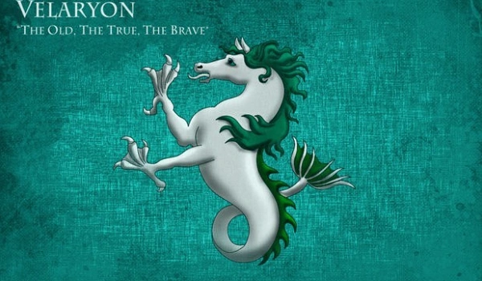

Casas

Casa Stark: Uma das sete grandes Casas de Westeros, com sede em Winterfell. Responsável por manter a ordem no Norte e liderada por Eddard (Ned) Stark. Possuem "sangue de lobo", uma selvageria inata, e são conhecidos por seu brasão com um lobo gigante cinza em fundo cinza e o lema "O inverno está chegando". Além disso, possuíam uma lâmina ancestral de aço valiriano chamada Gelo, que foi tomada pelos Lannisters e destruída. Destacam-se membros como Robb, Sansa, Arya, Bran, Rickon, Benjen Stark e Jon Snow.

Casa Lannister: Conhecida como a Casa mais rica de Westeros e os Senhores das Terras Ocidentais, Guardiões do Oeste. Sua morada é Rochedo Casterly, um palácio construído sobre um enorme rochedo à beira mar, rico em depósitos de ouro, fonte de toda a riqueza da família. Liderada por Tywin Lannister, conhecido por sua estratégia militar e frieza. O lema oficial é "Ouça-me Rugir", mas também são reconhecidos pelo lema "Um Lannister sempre paga suas dívidas". Destacam-se membros como Cersei, Jaime, Tyrion, Joffrey, Myrcella e Tommen Baratheon.

Casa Baratheon: Uma das sete nobres Casas de Westeros, responsável por guardar as Terras da Tempestade. Seu trono fica em Ponta Tempestade, antigo castelo dos Reis da Tempestade. Sua linhagem começou com Orys Baratheon, conquistador do castelo e herdeiro dos Durrandons. Mostraram lealdade aos Targaryen até a Guerra Civil dos Sete Reinos, quando Robert Baratheon, aliado aos Tullys, Starks e Arryns, se tornou Rei após destronar os Targaryen. Membros em destaque incluem Robert, Stannis e Renly Baratheon, este último reivindicando o trono com o apoio da Casa Tyrell.
Casa Targaryen: Descendentes de Valíria, os últimos senhores de dragão no mundo. Fixaram residência em Pedra do Dragão, e com seus dragões, Aegon e suas irmãs Rhaenys e Visenya, iniciaram as Guerras de Conquista para unificar os Sete Reinos de Westeros. Construíram o Trono de Ferro com as espadas dos senhores curvados a eles. Governaram Westeros por 276 anos, enfrentando desafios como a morte de seus dragões, rebeliões e mais guerras. Aerys II, conhecido como Rei Louco, foi destituído por Robert Baratheon, mas os herdeiros Viserys e Daenerys Targaryen sobreviveram e se refugiaram em Essos.
Casa Mormont: Uma família nobre e antiga do norte de Westeros, leal aos Starks. Apesar da escassez de recursos, são defensores da Muralha e guardiões contra povos bárbaros. Possuíam a espada de aço valiriano Garralonga, que foi presenteada a Jon Snow. Destacam-se figuras como Jeor Mormont, Senhor Comandante da Patrulha da Noite, Maege Mormont, líder dos Mormonts, e Jorah Mormont, servo fiel de Daenerys Targaryen.

Casa Greyjoy: Orgulhosos guerreiros do mar, governantes das Ilhas de Ferro. Seu castelo é Pyke, em um arquipélago com clima severo e cercado por mares tempestuosos. "Nós Não Semeamos" é seu lema, lembrando sua história de saques e conquistas no passado. Lideraram uma rebelião contra o Rei Robert Baratheon, e o filho Theon foi entregue como protegido dos Starks. Conhecidos como os vikings de Game of Thrones, sua terra é chamada de Terra dos Mil Reis, pois qualquer capitão pode se tornar o Senhor das Ilhas de Ferro após a morte do último comandante. Membros notáveis incluem Balon Greyjoy, Senhor Ceifador de Pyke, Theon Greyjoy, herdeiro aparente e protegido dos Starks, Yara Greyjoy, capitã da Blackwind, e Euron Greyjoy, concorrente ao trono de Pyke.
Casa Bolton: Uma família sinistra e vingativa do Norte. Seu brasão exibe um homem esfolado de cabeça para baixo em um fundo rosa e sangue, enquanto seu lema ameaçador é "Nossas Lâminas são Afiadas". Seu lar é o Forte do Pavor, às margens do Rio das Lágrimas. Descendentes dos Primeiros Homens e inimigos ferrenhos dos Stark, traíram a Casa Stark para se aliar aos Lannisters. Os Boltons são conhecidos por esfolar seus inimigos e ostentam uma fama tenebrosa. Membros notáveis incluem Roose Bolton, Lorde Sangue-Suga, e Ramsay Bolton, o Bastardo de Bolton e de Dreadfort, proclamado Senhor de Hornwood e Senhor de Winterfell.

Casa Tyrell: Guardiões do sul de Westeros e Senhores da Campina. Segunda família mais rica após os Lannisters. Sua sede é Jardim de Cima, com um labirinto de silvas para defesa. Iniciaram como servos dos Gardeners e ganharam poder ao render Jardim de Cima para Aegon Targaryen. Aliados dos Targaryen, enfrentaram conflitos com os Dorneses. Apoiaram os Targaryen na Guerra Civil. Destaques incluem Mace Tyrell, Olenna Tyrell (Rainha dos Espinhos), Margaery Tyrell (casada com Renly e noiva de Joffrey) e Loras Tyrell (Cavaleiro das Rosas e amante de Renly Baratheon).
Casa Tully: Nobres guardiões dos Sete Reinos, Senhores do Tridente. Sede em Correrrio, protegido pelas águas dos rios Pedregoso e Ramo Vermelho. Apoiaram a Conquista de Aegon Targaryen e consolidaram seu poder através de alianças matrimoniais. Destaques incluem Hoster Tully (Senhor de Correrrio, pai de Catelyn Stark e Lysa Arryn), Edmure Tully (herdeiro de Correrrio, prisioneiro dos Lannisters), Catelyn Tully (casada com Ned Stark, morta no Casamento Vermelho) e Lysa Tully (lançada do Portão da Lua em Ninho de Águias).

Casa Arryn: Orgulhosa e nobre guardiã do Vale. Sede no Ninho da Águia, intransponível palácio no pico mais alto das Montanhas da Lua. Jon Arryn, ex-Mão do Rei, liderou a Casa até sua morte misteriosa. Deixou o herdeiro Robert Arryn, ainda criança, sob regência de sua mãe Lysa. O Vale é protegido pelo Portão Sangrento e enfrenta desafios dos Clãs das Montanhas rebeldes e selvagens.

Casa Tarly: Orgulhosa e destemida, guardiã das Terras Fluviais. Baseada em Monte Chifre, têm uma arma de aço valiriano, Veneno do Coração. Lema "Primeiros em Batalha", lideraram a vanguarda na rebelião de Robert Baratheon.

Casa Martell: Senhores de Dorne, resistiram a Targaryen e são fieis a suas tradições. Brasão de sol perfurado por lança dourada. Lema "Insubmissos, Não Curvados, Não Quebrados". Regida por Nymeria e unida a Targaryen por casamento.

Casa Frey: Ricos e estratégicos, controlam passagem vital das Gêmeas. Walder Frey, Senhor da Travessia, possui muitos herdeiros. Traiu Robb Stark. Casa Hightower: Antiga e rica, iluminam o caminho de Oldtown. Aliados dos Targaryen. Casa Velaryon: Antigos aliados dos Targaryen, dominam os mares. Corlys Velaryon e Rhaenys Targaryen notáveis. Casa Cole: Nas Marchas Dornesas, sem história distinta. Criston Cole destacado. Casa Strong: Em Harrenhall, forjaram laços com Targaryen. Lyonel e Larys Strong notáveis.
Casa Hightower: Baseados em El Faro de Antigua, símbolo é farol de pedra branca. Leal aos Targaryen, fortuna comparável aos Lannister. Aliada durante House of the Dragon, série 200 anos antes de Game of Thrones.
Casa Velaryon: De Driftmark, ilha da Blackwater Bay. Ligados aos Targaryen, enriqueceram como mercadores. Notáveis Corlys Velaryon, Rhaenys Velaryon, Laena Velaryon, Laenor Targaryen. Apresentados em House of the Dragon.

Casa Cole: Habitantes das Marchas Dornesas, área historicamente conflituosa. Destacou-se por Criston Cole em House of the Dragon, série que antecede Game of Thrones, mostrando seu papel como "Fazedor de Reis

Casa Strong: Harrenhall, maior castelo dos Sete Reinos. Juntaram-se a Aegon na Guerra da Conquista. Notáveis Osmund, Lyonel, Harwin e Larys Strong.